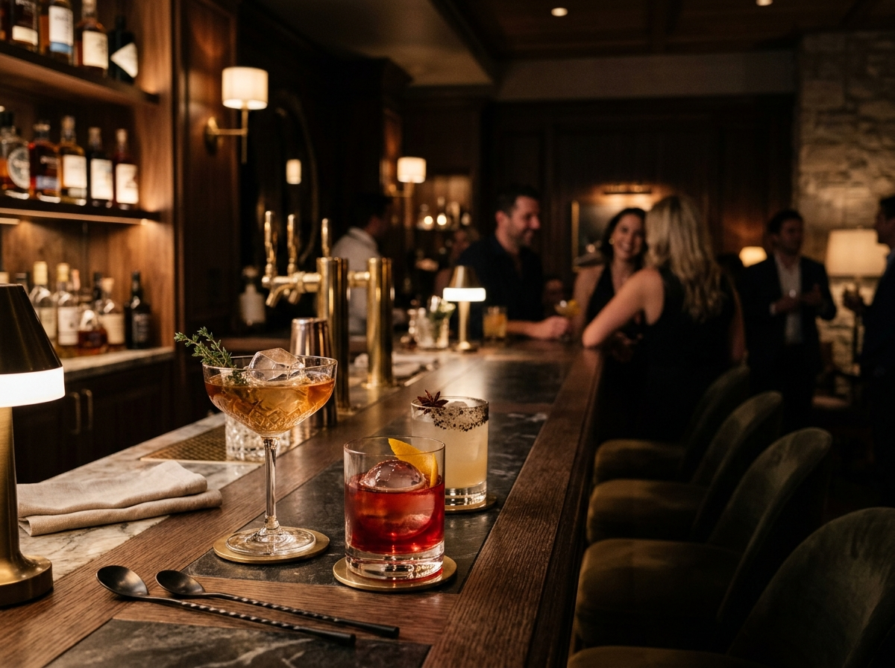
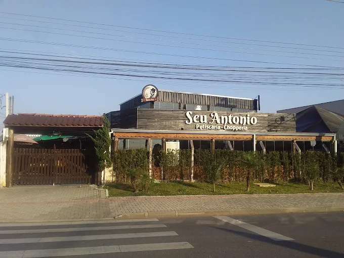
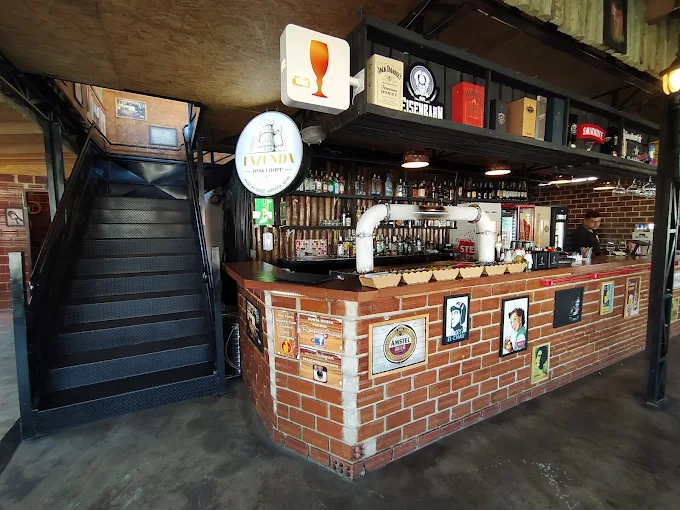
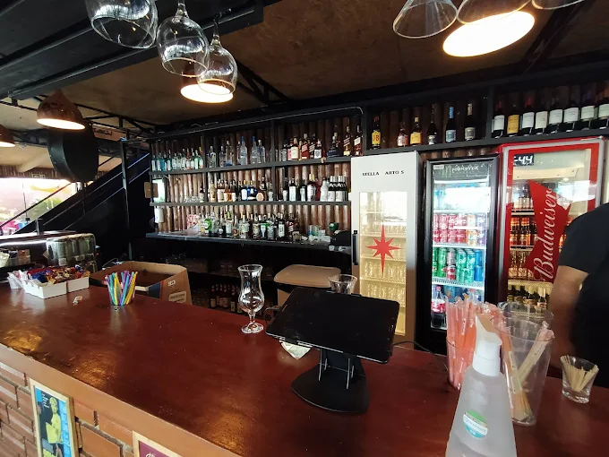
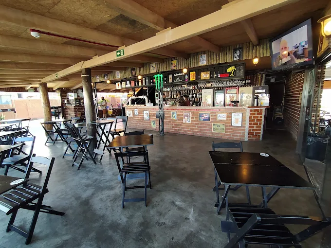
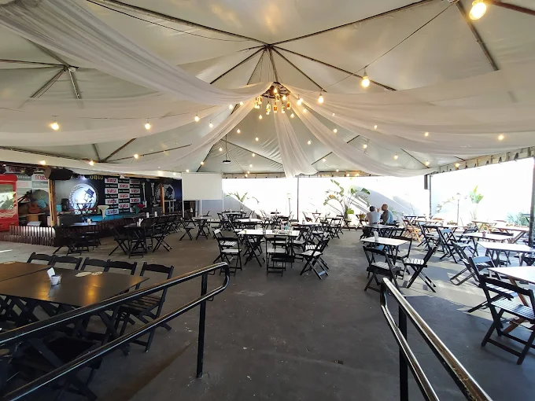
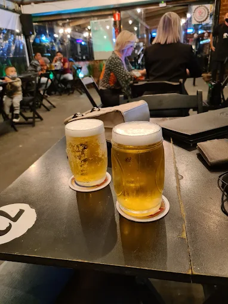

Bar e cozinha de rancho · Fazenda Rio Grande/PR
Comida de rancho, cerveja gelada e música ao vivo
Feijoada, churrasco, marmita e porção de tamanho honesto — com chope gelado, drink bem feito e banda tocando. Um armazém grande o suficiente pra caber a mesa inteira.
4,5 no Google · 1.836 avaliações
Ticket médio R$ 20–100 por pessoa

Porção que alimenta mesa
O Mistão de 1200g não é nome de marketing. É o peso mesmo.
Música ao vivo
Banda tocando, chope gelado e espaço de sobra pra ficar até tarde.
Todo mundo é bem-vindo
Casa reconhecida por acolher a comunidade LGBTQ+.
O que sai da cozinha
Comida caseira de verdade, no prato ou na marmita, com bebida à altura — da cerveja gelada à piña colada.
-
Feijoada e churrasco
Comida de rancho feita sem pressa, do jeito que a mesa cheia pede.
-
Mistão 1200g
A porção que virou assunto: carne, acompanhamento e gente suficiente pra dar conta.
-
Marmita
Pra levar pra casa ou pro trabalho, com o mesmo tempero do salão.
Salão, para viagem e delivery pelo WhatsApp.
O armazém
Ficamos na Av. Paineiras, no Nações. É casa de mesa cheia: aniversário, confraternização, sexta-feira que começou como uma cerveja rápida. Espaço amplo, equipe receptiva da porta ao caixa e preço que não assusta na hora da conta.
- Música ao vivo
- Ambiente espaçoso
- Chope e drinks
- Marmitas
- Delivery por WhatsApp
- Acolhe a comunidade LGBTQ+






Quem veio, contou
Nota 4,5 no Google, de 1.836 avaliações de quem já veio.
Essa casa em Fazenda Rio Grande é a melhor da região, já fomos várias vezes. Muito espaçoso, atendimento super diferenciado desde a chegada — e esse ponto eu destaco bem, seguranças e caixas são muito receptivos. Valores bem justos.
Local muito agradável, boa música, cerveja gelada, drinks lindos e deliciosos, atendimento fantástico, comida gostosa — especialmente o pão com bolinho e a batata rústica! Não encontrei nenhum ponto negativo.
Você tá doido, que marmita, meu Deus do céu. Me acabei com essa marmita, muito boa qualidade. 100%.
Onde estamos
Av. Paineiras, 109 – Nações, Fazenda Rio Grande/PRCEP 83820-479
Horário
Horário ainda não confirmado — ligue antes de sair de casa.